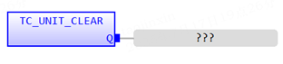
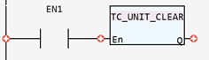

System Function.
Clears all the bits in the UNIT_ERROR system parameter.
|
|
|
|
Q: BOOL; |
Returned error number |
This function clears all the bits in the UNIT_ERROR system parameter. This command is typically used to reset a SYSTEM_ERROR raised by EtherCAT or to reset module errors from MC664 option modules.
(BOOL):=TC_UNIT_CLEAR();


Not available.